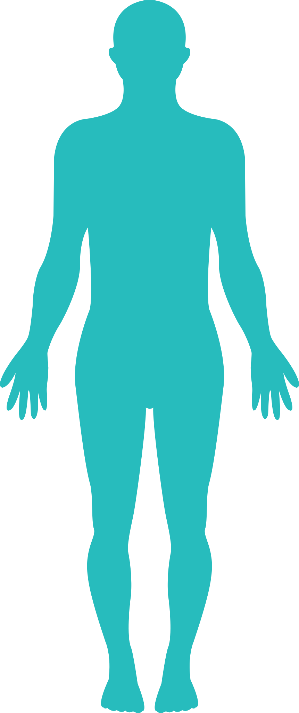

Lesson 2
Lesson 2
Why is it so hard to lose weight?
Anyone who has ever tried to go on a diet understands how hard it is to lose weight. It turns out that losing weight doesn’t require more willpower or fewer calories. There are many roles that play in weight loss, such as:
-

Human biology
Your body naturally stores fat to save up for energy when you will need it (think of survival mode). With that comes hormones that provide your body with signals to eat more when you don’t have enough food.
-

Food choices
We are driven by two different cues to eat food: internal and external. Internal cues are from your body’s hunger system that uses hormones to feel a sense of hunger. External cues are driven by just wanting or liking food.
-

Genetics
Some people can put on weight faster than others. Some people have a naturally high calorie burning rate, so they don’t put on as much weight. Your genes can also affect your body’s tendency to develop and store fat cells. But remember: your genetics do NOT 100% determine your destiny.
-
Environment
Weight gain is associated with lifestyle factors. In a time where there are fewer opportunities for physical activity, it’s no wonder weight gain is so common. Also, unhealthy snack foods like chips and candy are found in convenience stores at every corner. Chains of fast food restaurants make it difficult to pick healthy choices. Even on social media you will find food advertisements that are tempting you to eat high-fat and sugary foods.
-

Stress
Stress is one of the most common causes of weight gain. When we feel overwhelmed by life’s daily challenges, we cope with it through unhealthy eating, thinking that it will make us feel better. And while it may provide short term relief, stress eating can cause feelings of guilt and does not address the root cause of stress.